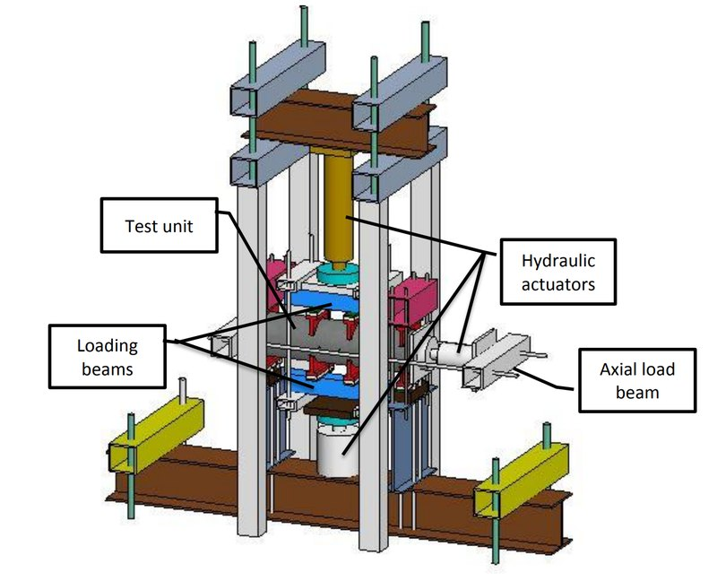
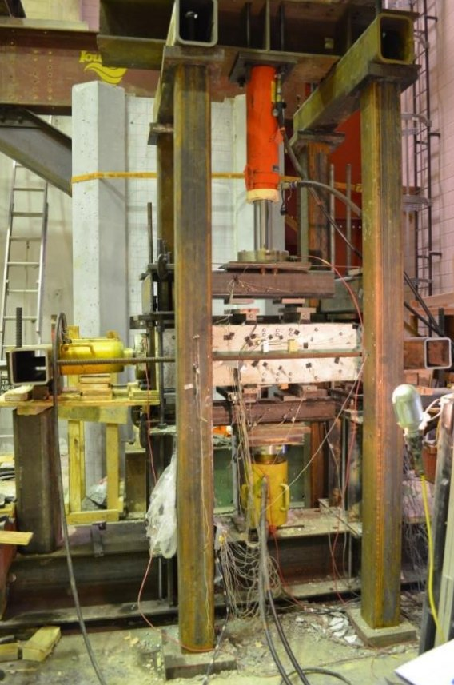

Frontispiece
Chapter the first
I think about forecasting for a living, I've previously written some science fiction, and I have a history of getting sucked into all kinds of different hobbies.
I'm Director of Forecasting at Metaculus, where I wound up after becoming obsessed with forecasting and doing pretty good at it. Before that I worked as a bridge engineer for six years, and got a master's degree in civil engineering from Iowa State University.
I love sci-fi and fantasy, and wrote my own sci-fi novel, SEER, when I had an idea I was really excited about and wanted to try my hand at writing a book. I live in Iowa with my wife and three kids.
Page 1
Chapter the second
I majored in civil engineering at Iowa State University, and got a master's degree in it as well. My master's thesis focused on the seismic behavior of hollow concrete columns. This involved designing a testing apparatus and scaled down hollow concrete columns and applying bending force until they broke, and measuring the strain in the reinforcement.
It was an interesting project, I learned a ton, and I got to do a lot of design, coding, and analysis, which as you'll see are recurring projects I'm drawn to. But overall it was pretty grueling and I was glad to be finished with that.
Page 2

The test frame, as designed

…and as built in the lab
Page 3
Chapter the third
Currently I'm Director of Forecasting at Metaculus. Prior to getting into the forecasting world I did actually use my degree, spending a year working at LeMar Industries designing agricultural towers and catwalks, and then 6 years at HDR designing highway bridges. However, over time I became pretty bored with bridge engineering. It was hard to feel satisfied when you spend weeks documenting calculations on prespecified bridge geometry only to show that it works and maybe tweak a few rebar sizes up and down.
During that time I found forecasting. I stumbled across an article about Superforecasters predicting the 2020 election, and that struck me as extremely satisfying.
Page 4
I'd always been interested in facts and evidence, and the idea of reducing bias in your opinions, sharing them as numeric probabilities, and seeing how accurate they wind up being sounded like an obvious extension of that that everyone should be doing. I made a few predictions on the 2020 election, and then forgot about them for a while until I got emails saying they'd been scored. I did pretty badly, but that motivated me to spend more time thinking about it, and I became a bit obsessed.
That obsession led me to Metaculus where I began climbing the leaderboards, and briefly became a Pro Forecaster before I made the (frightening) leap of joining the Metaculus team full time in 2022, first as Forecasting Program Coordinator and in 2026 as Director of Forecasting. Since joining I spend less time making forecasts and more time designing forecasting projects, identifying the best forecasting questions to support decision-making, and managing the Programs team.
Page 5
Chapter the fourth
I have a bunch of hobbies that vary in intensity over time. Some are more persistent and have stuck around forever, such as reading (sci-fi, fantasy, and thrillers especially), board games, forecasting, visiting national parks, hiking, camping, video games, Magic the Gathering, and 3D printing. Others come in waves where I'm obsessed with them for a while until either the idea works its way out of my head or I burn out. These are some of the things you'll see on this site, like writing and coding projects, and other things like video editing.
Page 6
Most of the second category of things are what you'll see on the projects page. Part of the motivation to revamp my website was making a place to share and document these things. Originally most of my coding projects were manual efforts that were partly for the end product and partly to learn to code, but these days I've transitioned more to yelling gently guiding AIs into producing what I want. So AI has taken a pass through my old coding projects and patched up the broken and outdated ones and given them some nicer polish, and has also lowered the barrier and time requirement for me to get ideas I think could be interesting or useful out of my head and into a tangible form.
Page 7
Chapter the fifth
Writing is a hobby that I've spent a big chunk of my life on, for fiction as a roughly two-year burst, while non-fiction / blogging has been a more persistent thing.
With blogging I've typically been drawn toward explainers, usually motivated by frustration over a perceived lack of depth in the conversation or me trying to get a better grasp on a topic. I love to write these kinds of things to clarify my own thinking, share what I've spent so much time getting up to speed on with others so it's easier for them and isn't all wasted on just me only, and to persuade and lay things out in what I consider to be a logical form. I tend to write mostly about politics, science, economics, and random things I've learned about.
Page 8
Formerly these things were in the form of posts on Facebook and Google Plus that no one would read, then I made a home for them with my old website so no one could read them in a more organized fashion, and now infrequently on Substack at The Missing Nuance, so that no one can read them at a place made for hosting tons of things no one reads and a few things that lots of people do.
My fiction writing consisted mainly of two ideas that I had become very attached to and frantically needed to get out of my head. My short story, Not Human, was written as I was thinking about what humans are made up of and how much we could lose before we'd be noticeably different. And SEER is a novel that was motivated by thinking about free will, the age of data collection, artificial intelligence, autonomous drones, and predicting the behavior of individuals. I published it back in 2019 after working on it for a few years, and it's interesting (to me at least) to see what seemed prescient and not so prescient about it now that we're in the era of advanced LLMs.
Page 9
Chapter the sixth
I live in Council Bluffs, Iowa, with my wife and three kids. Most of my free time is spent playing with them, taking walks, going on bike rides, hiking, going to sports and activities, camping, visiting national parks every year or two (mainly Grand Teton National park and sometimes Rocky Mountain National park), and all kinds of other things.
Page 10
Chapter the seventh
Page 11
Click a page to turn it — or drag a corner